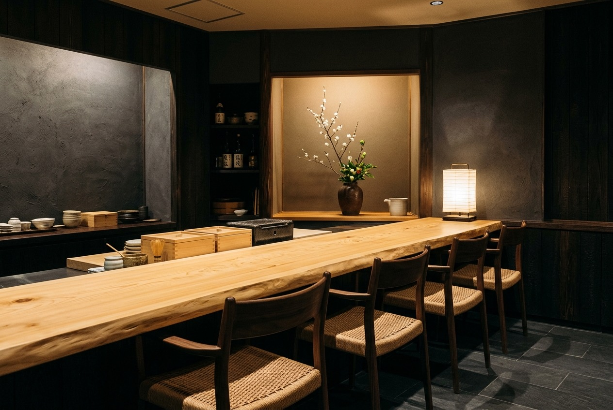
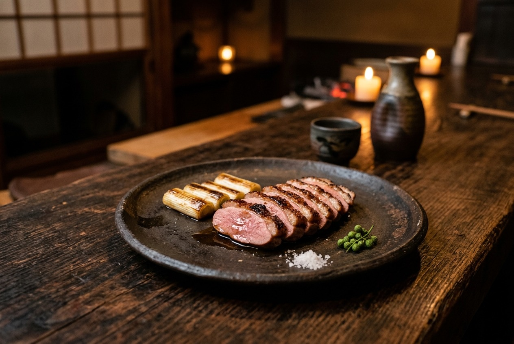

石臼挽き・毎朝の手打ち
長野・戸隠や北海道の在来種を中心に、季節ごとに最良の玄蕎麦を厳選。熱を持たせぬよう低速の石臼で挽き、香りと喉ごしの調和を極めます。

Soba & Binchotan Kaiseki — Kagurazaka
石臼で静かに挽いた手打ち蕎麦と、紀州備長炭が引き出す旬の旨み。
神楽坂の路地裏で、夜が深まるひと皿を。
Philosophy
「月白（つきしろ）」とは、月の昇る直前に東の空がほのかに白む刻をあらわす古語。料理が運ばれる前の期待と、食べ終えたあとの静かな余韻を大切にしたいという想いを込めました。
毎朝、その日の気温と湿度を確かめながら石臼で挽く在来種の蕎麦。夜には紀州備長炭の遠火でじっくりと火を入れた鴨や旬魚、蔵元直送の純米酒とともに、神楽坂ならではの穏やかな時間をお過ごしください。

白木カウンター 八席の静寂長野・戸隠や北海道の在来種を中心に、季節ごとに最良の玄蕎麦を厳選。熱を持たせぬよう低速の石臼で挽き、香りと喉ごしの調和を極めます。
合鴨、旬魚、京野菜。余分な調味を重ねず、炭火の遠赤外線で皮目は香ばしく、芯はしっとりと。素材の輪郭だけを静かに引き出します。
出汁を利かせた季節の小鉢と、全国の小さな蔵元から届く純米酒・燗酒。〆の蕎麦に至るまでの移ろいをお楽しみいただけます。

合鴨ロースと千住葱 炭火焼きNight Omakase
夜の月白では、季節の先付から旬魚、紀州備長炭で焼き上げる主菜、そして〆の手打ち蕎麦へと続くおまかせコースをご用意しております。接待や記念日、大切な方との語らいにふさわしい緩やかな流れでお運びいたします。
¥8,800（税込・サ別）
※前日17:00までのご予約をお願いいたします。仕入れにより献立が替わります。
¥12,100（税込・サ別）
※2名様より、2日前までの要予約。半個室（4名様まで）のご指定も承ります。
お料理の進行に合わせ、冷酒からぬる燗まで五種類の純米酒を少量ずつご提案いたします。
Information
神楽坂通りから一本入った石畳の小径。黒塀と小さな行灯が目印です。静かな空間でお食事をお楽しみいただくため、夜の部はお早めのご予約をおすすめしております。
お席のご予約・夜のおまかせは、Web予約より承っております。
こちらは架空店舗のデモ画面です。入力内容は送信・保存されません。